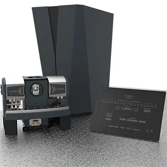
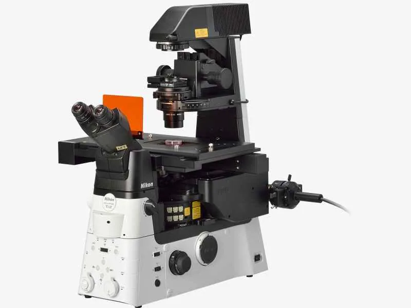
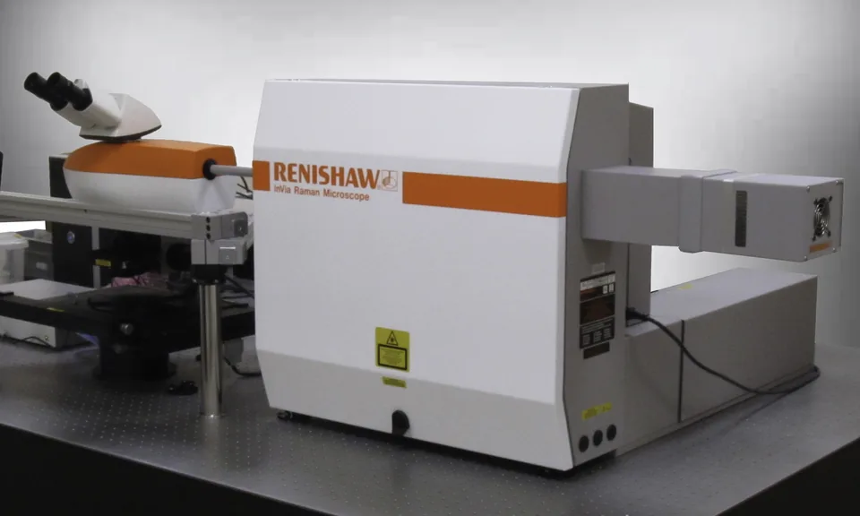
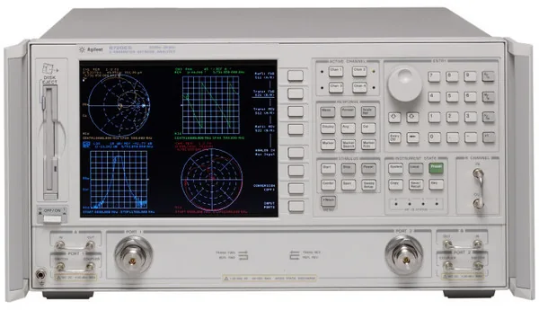
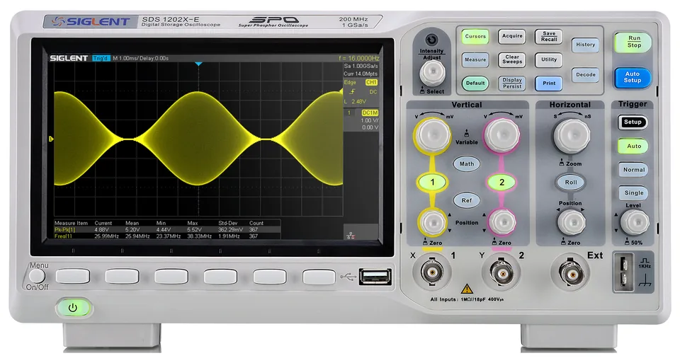
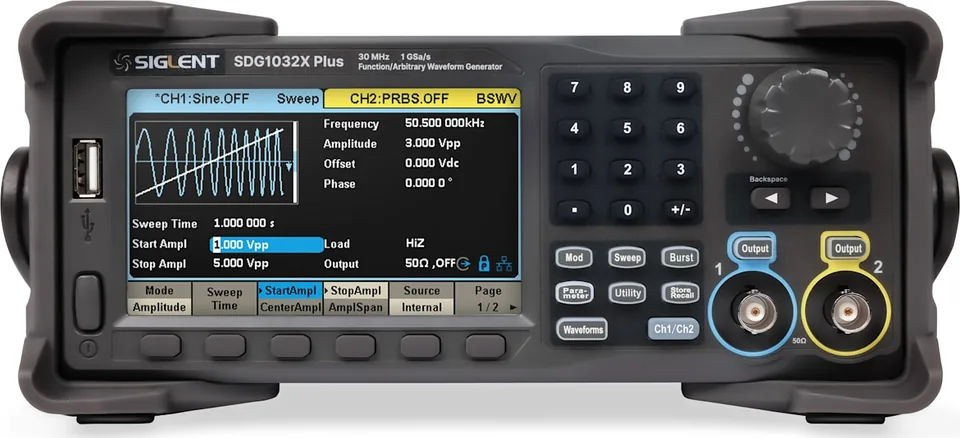
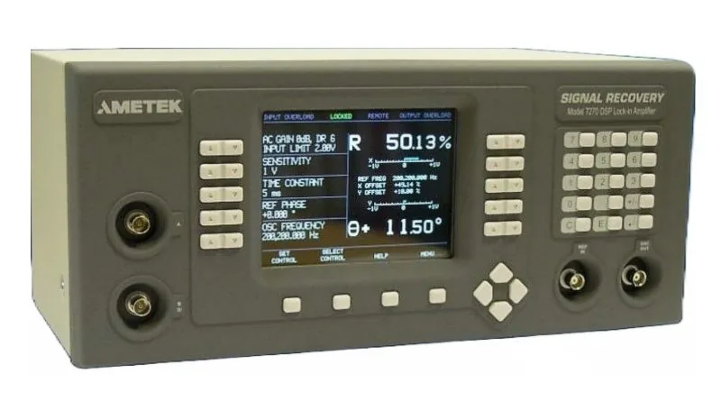
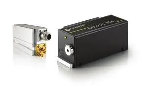
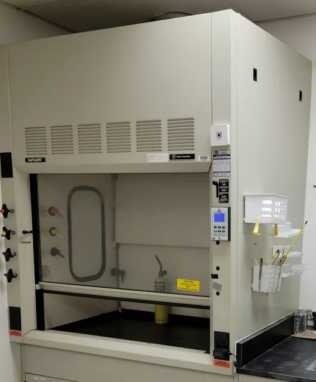

Photonics and nanophotonics modeling
Design workflows for resonators, metasurfaces, polaritonic media, and nanophotonic structures.
- Mode analysis
- Scattering response
- Inverse and parametric design
Facilities
QTM Lab combines local capabilities, FIU facilities, and external partnerships to connect design, simulation, and experimental validation.
QTM Lab maintains optics, photonics, cryogenic, microscopy, RF, and electronic measurement capabilities for quantum and metamaterials research.
Design workflows for resonators, metasurfaces, polaritonic media, and nanophotonic structures.
Measurement concepts for resonators, antennas, scattering parameters, and field-control devices.
Interfaces for cryogenic resonators, superconducting microwave structures, and quantum-device environments.
Full-wave electromagnetic simulation, reduced models, and reproducible parameter studies.
Qiskit, QuTiP, Python, and Jupyter workflows for education, prototyping, and quantum-system modeling.
Connections with FIU facilities and external partners support fabrication, characterization, computation, and translation.
Selected equipment and components from the QTM Lab inventory, organized by capability area.
Representative laboratory equipment supporting optical, cryogenic, RF, and signal-processing workflows.

Cryogenic platform with magneto-optic module for low-temperature optical and sensing experiments.

Advanced microscopy platform for optical inspection and experimental imaging.

Raman spectroscopy and microscopy for materials, nanophotonics, and sensing studies.

S-parameter measurements from 50 MHz to 20 GHz for RF, microwave, and resonator characterization.

200 MHz two-channel digital oscilloscope for time-domain diagnostics and laboratory measurements.

Arbitrary waveform and function generation for pulse, modulation, and control experiments.

DSP lock-in detection for precision measurement and weak-signal recovery.

Water-cooled SLM OPS laser-diode system for optical experiments.

Laboratory fume hood supporting sample preparation and safe experimental workflows.